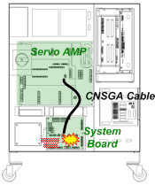
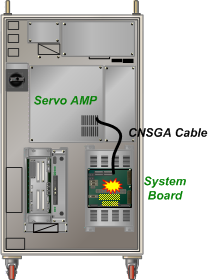

기존 에러코드: E0014 안전스위치(EM, OTR, TS 등) 순간접촉
1.1.65.1. 개요
시스템보드의 PWMON신호 생성회로에 이상이 발생하여 서보앰프가 모터전원을 차단하였습니다.
1.1.65.2. 원인 및 점검방법
|
(1) 시스템보드를 점검/교체하십시오. |
PWMON신호는 시스템보드가 마그네트 동작상태를 확인하여 생성하는 신호입니다. PWMON신호가 ON되었을 때 서보앰프에서 서보ON이 가능합니다.
그런데 시스템보드에서 회로적인 문제가 있어서 PWMON신호를 정상적으로 생성하지 못하면 이 에러가 발생합니다. 시스템보드를 교체하고 문제가 재발하는지 확인하십시오.

(a) Hi5a-S 제어기

(b) Hi5a-N 제어기
그림 1.180 시스템보드의 PWMON신호 생성회로 고장